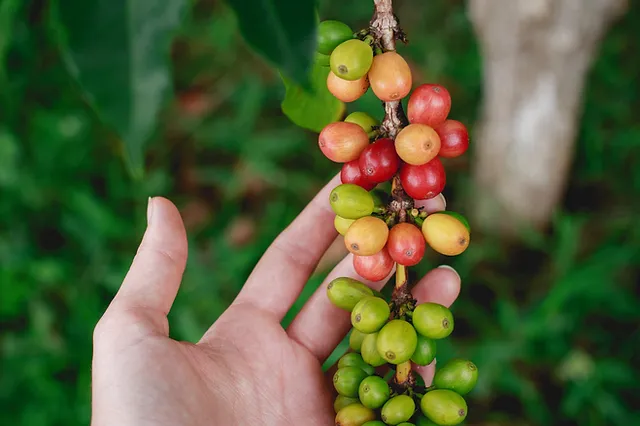
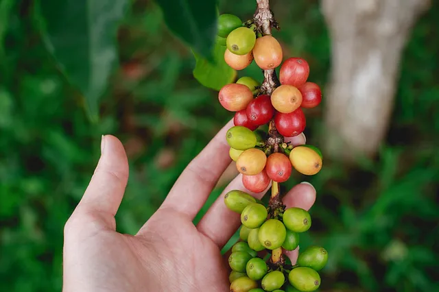

El café de especialidad - El Cultivo
La nueva versatilidad del café no tiene límites. Hoy podemos disfrutar de un café en todas sus formas:
taza, vaso, pocillo, bebida, cóctel, caliente, frío o hasta en un postre. Existen muchas más cafeterías
de especialidad, cafés de siempre con mejores granos, nuevos jugadores en el circuito y muchas más
opciones muy cerca nuestro.
Hasta hace poco, el supermercado sólo ofrecía paquetes de café torrado de
mala calidad, pero hoy nos sorprende con una variedad de opciones en grano y molido, o de orígenes y en
formatos para prepararlo en diferentes máquinas y métodos que tenemos en nuestro hogar. Por lo que es
importante contar con los siguientes conceptos:
El café de especialidad
En 1974, en una entrevista en el Tea & Coffee Trade Journal, la noruega Erna Knutsen utilizó por primera
vez el término “Café Especial”. Este término se refiere a granos de café exclusivos que habían sido
cultivados en unas condiciones climatológicas idóneas y resaltan por su aroma y sabores únicos.
- Son cafés con una puntuación de 80 puntos o más en una escala de 100. Esta valoración es otorgada
por catadores certificados.
- El café de especialidad se obtiene a través de un proceso de producción artesanal respetuoso con
todas las partes implicadas en el mismo. Desde el caficultor hasta el barista.
- Se distingue por la ausencia de defectos y un aroma, sabor y personalidad excepcionales.
El cultivo
El café de especialidad empieza a gestarse desde el origen. El cultivo es un proceso muy cuidado y se
realiza en una región específica con unas condiciones especiales de temperatura, sombra, humedad o
altura. Todos estos factores influyen directamente en la calidad del grano, que se obtiene a través de
un proceso de producción artesanal en el que se prescinde por completo de herbicidas o pesticidas
químicos.
Los 10 principales países productores de café del mundo.

En ésta lista actualizada te mostramos de mayor a menor, los 10 principales países productores de café en
el mundo.
- Brazil
- Vietnam
- Colombia
- Indonesia
- Honduras
- Etiopía
- India
- Uganda
- México
- Perú

Decir que el continente americano puede presumir de supremacía como productor de café es algo poco
habitual pero muy cierto.Seguido de cerca por el Sudeste Asiático y África, estas 3 regiones concentran
el 70% de los granos cultivados.En estas regiones el cultivo de café representa uno de los principales
rubros sobre los que sustentan su economía.
Países emergentes en el mercado del café
Aunque acabamos de darte una lista actualizada con datos de mayo de 2019 de los 10 países mayores
productores de café en el mundo, ya verás que rápido cambia.
Los volúmenes de producción de café en cada país y en el mercado mundial del café cambian constantemente
debido a varios factores.
Así, de año en año veremos como algunos países escalan posiciones mientras que otros las pierden.
El precio internacional del café y los nuevos mercados estimulan negativa o positivamente la producción
de café en cada país.
El precio del café en bolsa y las políticas en materia económica de cada país, llevan a los productores
de café a decidir si incrementan o disminuyen sus áreas de siembra.
La actual crisis de precios del café está obligando a muchos productores de café a eliminar sus cultivos
y buscar otras alternativas de producción que puedan ser más rentables.
Este es el caso de países como Costa de Marfil y El Salvador.
En otros casos, algunos países pueden estar buscando en medio de ésta crisis, una oportunidad de negocio
y llenar el vació de quienes salen del mercado. Este es el caso de China.
El carácter de Bi anualidad de las plantas de café afecta los volúmenes anuales de producción.
La bi anualidad es una característica fisiológica del cafeto. Hace que las plantas de café tengan un año
de alta producción seguido de un año de baja producción.
Este fenómeno es más marcado en algunas regiones productoras de café como en Brasil.
Para el año 2019 se ha anunciado una disminución del 17,4% en la producción de café de Brasil comparada
con la producción de 2018 por efectos de la bi anualidad.
En 2018 Brasil tuvo la producción de café más alta de su historia llegando a obtener 61,7 millones de
sacos.
Este aumento coincidió con el año de alta producción de las plantas y un clima que favoreció las
floraciones y el cuajado de los frutos.
El comportamiento del clima afecta la producción de café.
En varios de nuestros artículos ya hemos comentado como la producción de café depende de las
floraciones. Y como las floraciones dependen del clima.
Así, el volumen anual de café cosechado en cada país, es el reflejo de las condiciones climáticas que se
hayan presentado durante el año inmediatamente anterior.
Volviendo al ejemplo de Brasil, la disminución en la producción de café para 2019 también está
relacionada con:
- Condiciones climáticas adversas en el estado de Espirito Santo.
- Una disminución del área sembrada en variedades Robustas en los estados de Bahia y Minas Gerais.
- Un 8,7% del área cafetalera ha sido renovada, es decir que las plantas están en crecimiento y aun
no
entran en producción.
Aunque hemos expuesto aquí la situación de Brasil como ejemplo, lo mismo ocurre en todos los países
productores.
Por ello de año en año, el Top 10 de países productores de café cambia.
La Planta de Café
La planta de café Se conoce como café a la semilla que se encuentra en el fruto de una cereza del cafeto
y a la bebida que se obtiene de la misma al final del proceso agrícola e industrial. El cafeto, o
Coffea, es un género de plantas clasificado dentro de la gran familia de las rubiáceas. Se trata de un
arbusto nativo del África subtropical y del sur de Asia, que da un fruto denominado drupa, semejante a
la cereza, cuyas semillas se emplean (molidas y tostadas) en la elaboración del café.
Las dos especies más importantes de la planta se llaman arábica y robusta. Cada una tiene sus propias
cualidades, y se cultivan en climas y altitudes distintas. La variedad arábica es la más utilizada en la
elaboración de cafés de especialidad y gourmet. La diferencia fundamental entre estas especies se nota
al probarla: la coffea arábica se destaca por un aroma y acidez intensa y la coffea robusta porque tiene
más cuerpo y es más amarga. Esto se debe a la alta concentración de cafeína que contiene la robusta (la
cafeína es un alcaloide y, como tal, sabe amargo). Al ser más amarga su cultivo es sencillo, ya que
repele enfermedades y animales que habitualmente atacan a la planta. En cambio, la arábica necesita ser
plantada en altitudes diferentes y contar con mayores cuidados.
El café que se prepara con arábica es:
- Más suave.
- Menos amargo.
- Más aromático.
- Más delicado.
- Menos astringente.
- Contenido de cafeína: 0.8% a 1.5%.
El café que se prepara con robusta es:
- Más resistente.
- Más amargo.
- Tiene más cuerpo.
- Contenido de cafeína: 1.7% a 3.5%.
La recolección de los granos
Los métodos utilizados para recoger el grano también influyen directamente en la calidad del café. Los
cafés de especialidad se recogen siempre a mano y los caficultores se encargan de seleccionar las
cerezas de café cuando están en el punto justo de maduración para evitar que estén demasiado verdes o
maduras y esto aporte amargor al café.
El cafeto crece mejor en la sombra, pero puede cultivarse totalmente al descubierto. Los cultivos al
descubierto, o de sol, son más eficientes desde el punto de vista económico, pues con la exposición
permanente el cafeto es más productivo. Sin embargo, acarrea un excesivo uso de agua y suelo, y un
debilitamiento de la salud del cafeto (lo hace menos longevo y más propenso a las enfermedades y
plagas). Los cultivos de sombra son más gentiles con el medio ambiente y con el cafeto, pero producen
menos cantidad.
Recolección
La flor del cafeto se convierte en un fruto maduro después de 32 semanas (8 meses) para el arábica, y
entre 9 y 11 meses para el robusta. Esto da inicio a la cosecha o recolección. Recolectar sólo frutos
maduros incrementa la calidad del café producido, pues garantiza su uniformidad y recolección en el
mejor momento.
Manual: también llamada picking, en este tipo de cosecha se seleccionan los mejores
frutos, ya que se recolectan sólo los maduros, uno por uno. Durante toda una jornada el cosechador logra
llenar apenas unos cuatro baldes de fruto maduro. Por lo tanto, es un tipo de cosecha más costosa, que
se aplica sólo para los cafés de mejor calidad.
Mecánica:también llamada picking, en este tipo de cosecha se seleccionan los mejores
frutos, ya que se recolectan sólo los maduros, uno por uno. Durante toda una jornada el cosechador logra
llenar apenas unos cuatro baldes de fruto maduro. Por lo tanto, es un tipo de cosecha más costosa, que
se aplica sólo para los cafés de mejor calidad.
Stripping:es un método manual, pero en vez de cosechar el fruto uno por uno, los
cosechadores sacan al mismo tiempo todos los que están en la rama y los dejan caer en una lona dispuesta
debajo del cafeto. Si bien es manual, es más rápido y menos costoso, aunque ofrece una cosecha
despareja.
 

Beneficio
El beneficio comprende todos los procesos necesarios para convertir un fruto de café en un grano de
pergamino seco, capaz de almacenarse y listo para la trilla. Existen varios procesos de beneficio
posibles, y se escoge el que más convenga según la especie cultivada, la región, el tipo de recolección
y la disponibilidad de agua. Los dos más usados son el natural y el lavado, aunque en 16 los últimos
años, las fincas que producen cafés de calidad junto con las nuevas búsquedas de sabores de las
cafeterías de especialidad propulsaron nuevas técnicas.
Así es que también se habla de honey (un semilavado) y, en los últimos tiempos de anaeróbico. A veces,
aunque sea la misma finca o el mismo lote, el resultado final de la taza puede ser muy diferente
dependiendo del tipo de beneficio al que fue sometido el grano.
Luego de realizar el beneficio se obtiene el café verde, llamado así por el color que obtienen las
semillas luego de los procesos, listo para almacenar y llevar a tostar.
Lavado o húmedo:el objetivo del beneficio por vía húmeda es deshacerse de la pulpa del
fruto para poder secar más fácilmente el café pergamino y después poder almacenarlo bajo condiciones que
aseguren una buena conservación. Se separan para limpiar en agua (las defectuosas o verdes flotan y las
rojas maduras quedan en el fondo debido a su densidad), se realiza el despulpado, luego se deja
fermentar en agua (entre 4 y 24 hs), se lava y se procede al secado. Este proceso se usa
tradicionalmente en Colombia, Indonesia, India, países de África como Kenya y Tanzania, y otros de
Centroamérica como Costa Rica y Guatemala, y también en México.

Natural o seco:en algunos países como Brasil, el café se suele secar directamente
después de cosechado, sin remover la pulpa. El proceso comienza con un lavado y limpieza donde se
separan las hojas, trozos de madera, piedras y mugre de los granos de café. Luego, sin despulpar, se
dejan secar al sol a temperaturas entre los 45º C y 60º C; los granos secos se someten a un proceso de
descascarillado donde se separa la pulpa y la cáscara de la semilla.
Honey:luego de la recolección, los frutos se separan en canales de agua. Se retira la
pulpa y se deja el mucílago, piel que recubre las semillas internas, para el secado. Generalmente se
ponen a secar sobre camas africanas, son una especie de mesas en altura con mallas plásticas para que el
aire entre por arriba y por abajo, y seque de forma pareja. Luego se descascara y almacena. Es un
intermedio entre el lavado y el natural porque la cereza se despulpa y luego se seca aún con la capa del
mucílago que queda en el pergamino.
Anaeróbico: es una fermentación basada en procesos que se realizan sin intervención del
aire, más concretamente del oxígeno. Se recolectan las cerezas maduras, se separan en agua y se realiza una
fermentación sin oxígeno y a baja temperatura, luego se seca y se realiza el descascarillado.
Características de la bebida según beneficio:
- Lavado: acidez, dulzura media y cuerpo medio. Son los típicos suaves colombianos.
- Natural: bebida más dulce, acidez baja y más cuerpo.
- Honey: resaltan la dulzura, la acidez equilibrada y los sabores frutales que ofrecen una bebida muy
completa y potente.
- Anaeróbico: refina la dulzura, la acidez y el cuerpo de estos cafés. Les suma notas sensoriales
distinguidas, como frutas, caramelo, chocolate entre otros.